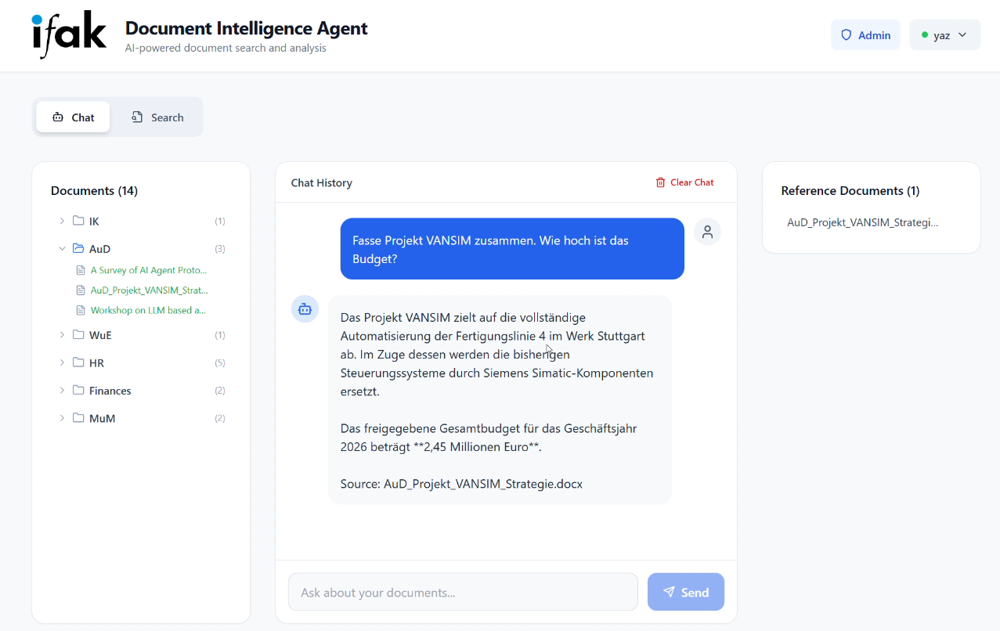
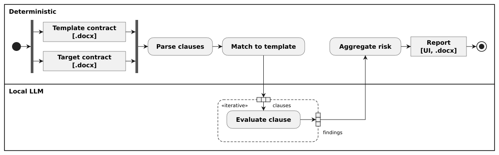
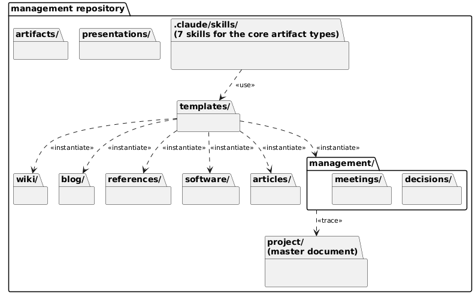

AI Engineering
Since moving from the wireless industrial communication team into the automation & digitalisation team, I've started building LLM agents and RAG systems. So far this includes two tools: a document search agent built as a demo, and a contract review agent requested by contract management in the finance department. We worked out with that team what they really needed and then built the tool, which is now in use. Looking ahead, I want to deepen my expertise in Generative AI Engineering and gain more experience bringing tools into production end to end.
Timeline: Jan 2026 to present
-
Jan 2026
Document Intelligence Agent: first RAG demo built
Early adoption of embedding-based retrieval and a local vector database, ahead of it becoming a default choice.
-
Apr 2026
ConvAssist: proposal submitted
Idea developed into a full research project with consortium, and the proposal submitted to a funding call.
-
Jun–Aug 2026
Contract Manager Agent: first version built and rolled out
Requirements clarified together at the request of contract management, then built and rolled out into production.
-
Aug–Sep 2026
Project Management Framework: first draft introduced, in development
Documentation framework and Claude Code skills for coding agents, validated in a real paper-writing project.
-
Aug–Sep 2026
OOAD Agentic Skills: first draft introduced, in development
A skill set that guides coding agents through an object-oriented analysis and design workflow.
Document Intelligence Agent
DemoChat-first, on-prem RAG agent for internal company documents
- Context
- Internal company knowledge, held in documents of different formats, was spread across a fragmented document repository, so finding information meant searching folders by hand. Because the documents were confidential, sending them to a public-cloud AI service was not an option.
- Solution
- A conversational agent rather than a keyword search: a directory crawler ingests PDF, Word (DOCX), Excel (XLSX) and PowerPoint (PPTX) files. Content is split into chunks, embedded locally and stored in LanceDB. Each question is embedded as well and matched semantically against the vector store via top-K retrieval; keyword matching is available as an alternative. The retrieved context is passed to a local LLM, which writes a synthesized answer and cites the documents it used; the backend parses those citations and the frontend renders a Reference Documents panel with a clickable link to every original. Access is role-based at folder level: on an admin page, users are assigned roles and each role is granted specific document folders, so the document tree, search and chat only draw on the folders a user may see.
- Technologies
- Python FastAPI Ollama (Llama 3.2, nomic-embed-text) LanceDB Next.js / TypeScript RBAC with folder-level permissions
- Outcome
- A fully local pipeline (Ollama, LanceDB) keeps all data on-prem with no license dependencies on external AI providers. Role-based folder access model for multiple users; answers are grounded and cited, giving faster access to internal knowledge and reducing repetitive-question load. The result is a working demo, not yet a production-ready product. The demo was presented in a workshop for regional managers of the Magdeburg Chamber of Industry and Commerce and received interest and positive feedback from a company.

ConvAssist
Concept / proposal phaseLLM-based conversational care assistant for people with chronic conditions such as Alzheimer's
- Context
- People with chronic conditions such as Alzheimer's who want to stay at home are cared for alternately by family members and professional caregivers. Coordination is hard: reminders such as medication, meals, and drinking are missed, phone calls become difficult, and information between relatives and care services is passed on through calls, messengers, or notes that get lost or reach the wrong person.
- Solution
- ConvAssist is an LLM-based conversational assistant that the affected person talks to in natural language, on a dedicated device with voice, video and touch interaction. It gives calendar-based reminders (medication, meals, drinking, appointments) and connects relatives and care services through shared apps, so information reaches the right person. Optional extensions add wearable-based health monitoring and automatic emergency alerting.
- Outcome
- The project idea was developed with the team into a complete concept for the funding proposal. The acquisition itself (project consortium and funding submission) is described under Project Acquisition & Consortium Leadership.
Contract Manager Agent
In productive useAI agent for automated support in contract review
- Context
- Consortium and research contracts arriving from project partners had to be checked clause by clause against the internal standard template, previously signed contracts, and contract management's accumulated review comments. This process was time-consuming and error-prone. Because contracts are confidential, no external AI service was an option, so only small local LLMs could be used.
- Solution
-
Two approaches were implemented. The first version passes the whole contract to a local LLM. The second is a deterministic pipeline that limits each LLM evaluation to one clause and its best template matches:
• Parser: splits the contract into clauses and extracts comments and tracked changes with their text anchors via direct Office XML access, turning past review comments into structured knowledge.
• Similarity matcher: embeds every clause with a multilingual sentence-transformer and computes a pairwise cosine-similarity matrix against the knowledge base; tiered thresholds (strong / moderate / weak) select candidate counterparts per clause and flag clauses with no match.
• Evaluator: a locally hosted LLM judges which candidates truly correspond to the clause and returns risk level, finding type, a comment ready for the counterparty, a suggested reformulation and an internal source note. A deterministic step then combines all findings into an overall risk score and approval recommendation. - Technologies
- Python FastAPI Local LLM (llama.cpp / Ollama) sentence-transformers python-docx + Office XML React / TypeScript Docker
- Outcome
- The tool was specified together with contract management and is in productive use there; the team finds it useful. Reviewers get an assessment with a ready-to-send comment and source reference for each clause. As an on-premise application, it keeps all processing within the internal network. The clause-by-clause approach works as well; a systematic comparison of both approaches, involving the users, is still pending.

Project Management Framework
In progressProject management framework with reusable agent skills for consistent, traceable and AI-assisted project records
- Context
- Research and engineering projects accumulate critical knowledge, rationale, decisions, and meeting outcomes in ad-hoc formats. This leads to knowledge loss when team members change, slow onboarding, and an inability to reconstruct why decisions were made.
- Solution
- A lifecycle-driven documentation architecture: 11 artifact types (e.g. ADRs, meeting minutes, articles, wiki entries) mapped to 6 project phases, from proposal analysis to evaluation and partner collaboration. A dedicated management repository holds process, decisions, and documentation, while code lives in separate repositories linked from a component index. Append-only ADRs with superseding preserve the full decision history, and cross-references trace decisions to meetings, components, and deliverables. 7 Claude Code skills scaffold each artifact type and enforce the conventions: naming and numbering, placeholders, an orphan policy, and a retrofit path for existing repositories.
- Technologies
- Claude Code Agent Skills (SKILL.md) YAML frontmatter Git
- Outcome
- Validated in a real paper-writing project: the article's drafts, meetings, and decisions stayed traceable in one consistently structured repository. Gaps that surfaced during use were fed back into the templates and skills, and the conventions keep being refined through further real use.

Object-Oriented Analysis and Design (OOAD) Agentic Skills
In progressA skill set that turns single agent skills into an automated OOAD workflow for coding agents.
- Context
- As coding agents take on more of the actual implementation work, it gets harder to keep an overview of the code they produce. Keeping that code object-oriented makes it possible to derive class diagrams from it: a comprehensive view of what the agent built, which gives more control over the code and makes code review easier.
- Solution
-
An orchestrator skill runs the workflow. It confirms inputs with the user, runs the individual steps in order and passes each result to the next step as a file. Runs can therefore be repeated and resumed after context loss. Each step is a skill of its own:
• repository inventory
• spec conformance against UML diagrams
• OO-purity audit
• fix planning, with each fix approved by the user before it's applied
• class-diagram generation
The brownfield track audits and refactors existing code. A greenfield track that goes from requirements to UML design is in progress. - Technologies
- Python Agent Skills (SKILL.md) PlantUML JSON
- Outcome
- 7 skills, with a greenfield track in progress, built to the Agent Skills specification. Each skill has its own scripts, references and assets. The skills are harness-agnostic and designed to run in any Agent Skills–compatible harness, such as pi, Claude Code and opencode.